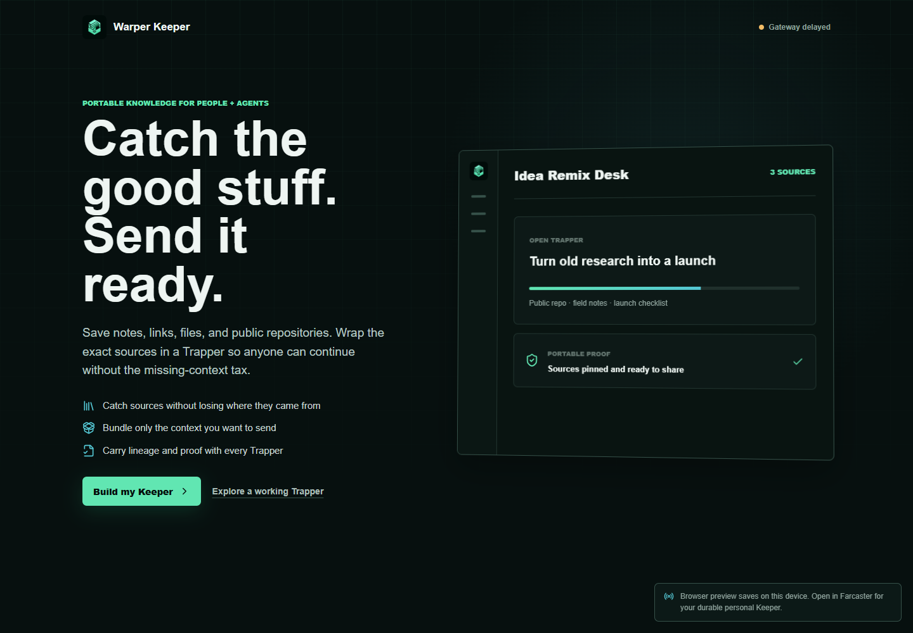

App
Warper Keeper
Collect sources and package portable context in Trappers for people and agents.

Start with the source
Review the repository status, license, and limitations before adopting it. A receipt establishes only what its evidence supports.
This page is a project overview. It does not host the application's backend, provide credentials, or grant permission to act.
git clone https://github.com/BrandonDucar/warper-keeper.gitThen follow the repository's current README for requirements and setup. Inspect scripts and configuration before running them.
Contribute something useful
- Open a reproducible issue with the version, expected result, and observed result.
- Use synthetic or explicitly consented fixtures. Never attach credentials or private customer data.
- Include test evidence and limitations with changes. Keep upstream attribution intact.